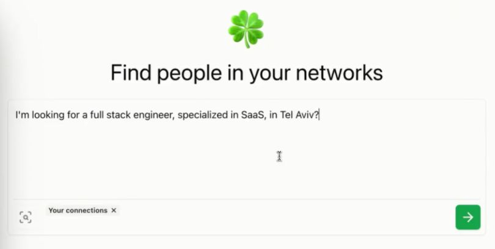

למה כל כך קשה למצוא את האדם שאתם באמת צריכים?
פורסם במקור ב LinkedIn
למה כל כך קשה למצוא את האדם שאתם באמת צריכים?
עם כל הרשתות החברתיות והמידע הזמין - כשבאמת צריכים למצוא מישהו מסוים, זה מרגיש כמו משימה בלתי אפשרית.
זאת לא בעיה אישית שלי ושלכם, זה כאב ידוע שרבים חווים.
Happenstance נולדה בדיוק מתוך השאלה הזו. הפלטפורמה, שהוקמה כחלק מתוכנית האצה של Y Combinator, היא לא עוד כלי נטוורקינג – היא גישה חדשה לגמרי לבניית קשרים מקצועיים - צ'אט ג'יפיטי לחיפוש קשרים.
הסיפור שלהם מתחיל בצורך פשוט: בעולם שבו הרשתות שלנו עצומות ומלאות קשרים, קשה להבחין בין עשרות אלפי החיבורים הדיגיטליים לבין האנשים שבאמת יכולים להוביל לשיתופי פעולה משמעותיים.
המייסדים זיהו את הבעיה הזו והבינו שאפשר לפתור אותה - באמצעות בינה מלאכותית.
אז מה Happenstance עושה?
היא מאפשרת לכם לחבר בין כל הרשתות שלכם – מ-Gmail ועד LinkedIn ו-Twitter – ולבצע חיפושים חכמים שבאמת מביאים תוצאות (כמובן, איך לא, בעזרת בינה מלאכותית).
זה כבר לא רק למצוא מישהו שעבד באותה חברה או למד באותו מוסד – אלא לזהות בדיוק את האדם שיכול לפתוח דלתות לפרויקט הבא שלכם, לפגישה משמעותית, או אפילו לתובנה חדשה.
בעולם שבו קשרים מקצועיים הם לא רק תוספת נחמדה אלא הבסיס להתקדמות, צמיחה וחדשנות - המטרה של Happenstance היא להפוך את כל זה לפשוט, מהיר ומדויק.
הפלטפורמה, שהוקמה בשנת 2023, ונתמכת על ידי Y Combinator, מאפשרת למשתמשים לחבר את חשבונות ה-Gmail, LinkedIn ו-Twitter שלהם, ולבצע חיפושים חכמים כדי למצוא את האנשים שהם מחפשים ברשתות המשולבות שלהם.
חשוב להם לציין שהפלטפורמה שומרת על פרטיות המשתמשים שלה, ללא פרסומות וללא מכירת מידע.
כלי חזק ומעניין עבור מי שצריך את הקונקשנים הנכונים: https://happenstance.ai
